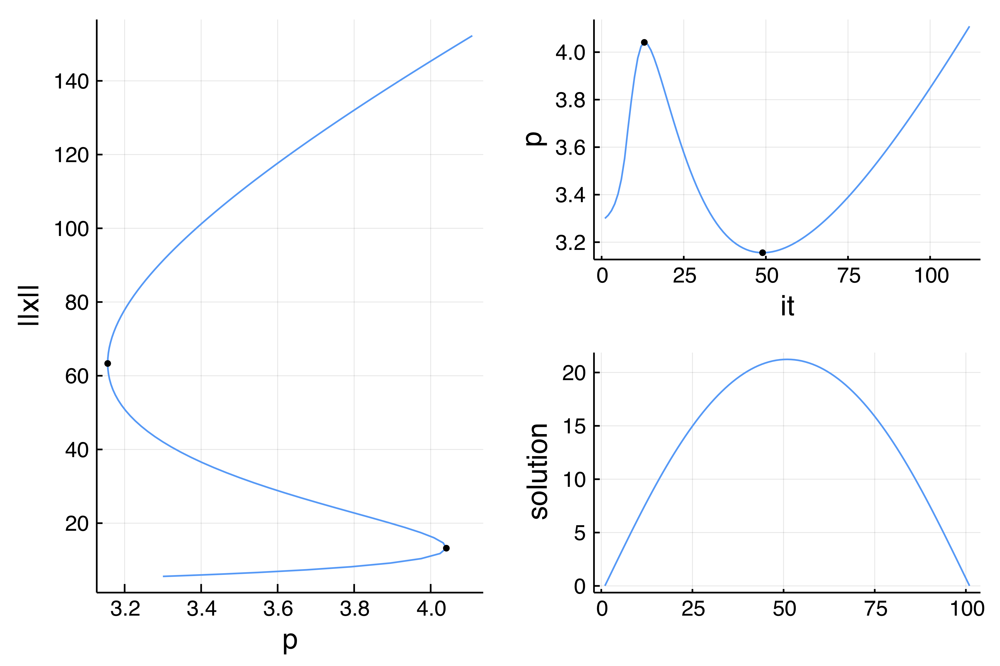
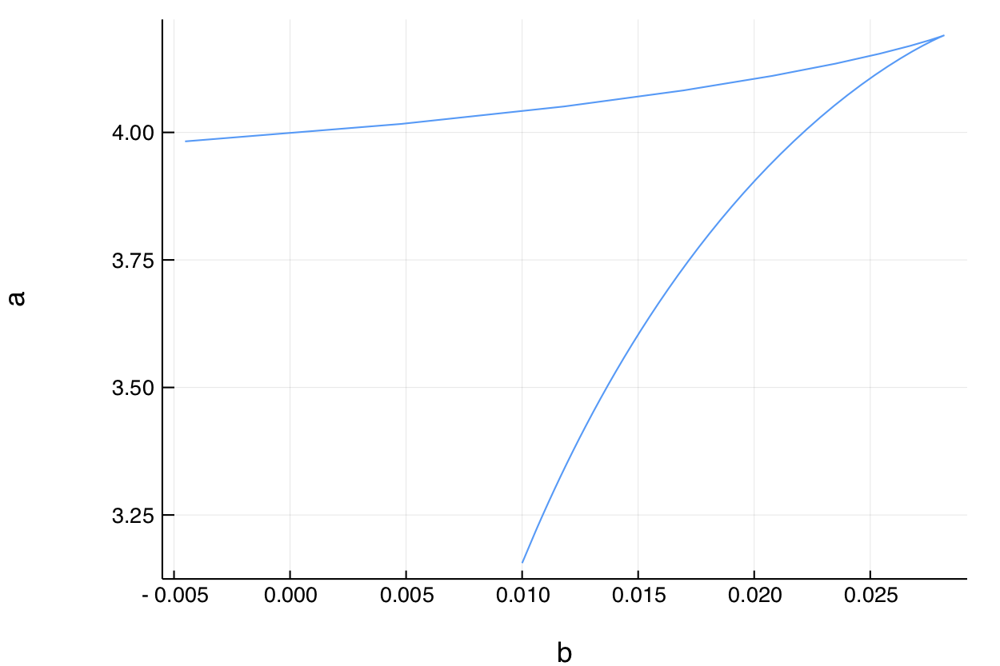

Temperature model (simplest example for equilibria)
This is a classical example from the Trilinos library.
This is a simple example in which we aim at solving $\Delta T+\alpha N(T,\beta)=0$ with boundary conditions $T(0) = T(1)=\beta$. This example is coded in examples/chan.jl. We start with some imports:
using BifurcationKit, LinearAlgebra, Plots, Parameters, Setfield
# Setfield.jl is used to provide the parameter axis @lens
const BK = BifurcationKit
N(x; a = 0.5, b = 0.01) = 1 + (x + a*x^2)/(1 + b*x^2)We then write our functional:
function F_chan(x, p)
@unpack α, β = p
f = similar(x)
n = length(x)
f[1] = x[1] - β
f[n] = x[n] - β
for i=2:n-1
f[i] = (x[i-1] - 2 * x[i] + x[i+1]) * (n-1)^2 + α * N(x[i], b = β)
end
return f
end We want to call a Newton solver. We first need an initial guess:
n = 101
sol = [(i-1)*(n-i)/n^2+0.1 for i=1:n]
# set of parameters
par = (α = 3.3, β = 0.01)Finally, we need to provide some parameters for the Newton iterations. This is done by calling
optnewton = NewtonPar(tol = 1e-11, verbose = true)We call the Newton solver:
out, = @time newton( F_chan, sol, par, optnewton)and you should see
Newton Iterations
Iterations Func-count f(x) Linear-Iterations
0 1 2.3440e+01 0
1 2 1.3774e+00 1
2 3 1.6267e-02 1
3 4 2.4521e-06 1
4 5 5.9356e-11 1
5 6 5.8117e-12 1
0.014715 seconds (2.90 k allocations: 2.555 MiB)Note that, in this case, we did not give the Jacobian. It was computed internally using Finite Differences.
This is not as bad as it looks despite the fact that there are so many allocations even with Finite Differences Jacobian. Using
BenchmarkTools.jl, one actually finds1.153 ms (2067 allocations: 2.04 MiB). This is reasonable as we did not code the problem with much care...
We can perform numerical continuation w.r.t. the parameter $\alpha$. This time, we need to provide additional parameters, but now for the continuation method:
optcont = ContinuationPar(dsmin = 0.01, dsmax = 0.2, ds= 0.1, pMax = 4.1, newtonOptions = NewtonPar(tol = 1e-8))Next, we call the continuation routine as follows.
br, = @time continuation(F_chan, out, par, (@lens _.α),
optcont; plot = true, verbosity = 0,
# function to plot the solution
plotSolution = (x, p; k...) -> plot!(x; ylabel="solution", label="", k...))The parameter axis lens = @lens _.α can be used to extract the component of par corresponding to α. Internally, it is used as get(par, lens) which returns 3.3.
We don't need to call newton first in order to use continuation.
You should see 
The left figure is the norm of the solution as function of the parameter $p=\alpha$, the y-axis can be changed by passing a different printSolution to continuation. The top right figure is the value of $\alpha$ as function of the iteration number. The bottom right is the solution for the current value of the parameter. This last plot can be modified by changing the argument plotSolution to continuation.
Two Fold points were detected. This can be seen by looking at br.foldpoint or by the black dots on the continuation plots. Note that the bifurcation points are located in br.bifpoint.
Continuation of Fold points
We get a summary of the branch by doing
julia> br
Branch number of points: 78
Branch of Equilibrium
Fold points:
- # 1, fold at p ≈ 4.03926020, step = 6, eigenelements in eig[ 6], ind_ev = 0 [ guess]
- # 2, fold at p ≈ 3.15599445, step = 24, eigenelements in eig[ 24], ind_ev = 0 [ guess]We can take the first Fold point, which has been guessed during the previous continuation run and locate it precisely. However, this only works well when the jacobian is computed analytically. We use automatic differentiation for that
using ForwardDiff
# Jacobian of F_chan
Jac_mat = (x,p) -> ForwardDiff.jacobian(z -> F_chan(z,p),x)
# index of the Fold bifurcation point in br.bifpoint
indfold = 2
outfold, _, flag = newton(F_chan, Jac_mat,
#index of the fold point
br, indfold)
flag && printstyled(color=:red, "--> We found a Fold Point at α = ", outfold.p, ", β = 0.01, from ", br.bifpoint[indfold].param,"\n")which gives
--> We found a Fold Point at α = 3.1556507316107947, β = 0.01, from 3.155651011218501We can finally continue this fold point in the plane $(a,b)$ by performing a Fold Point continuation. In the present case, we find a Cusp point.
We don't need to call newton first in order to use continuation for the codim 2 curve of bifurcation points.
optcontfold = ContinuationPar(dsmin = 0.001, dsmax = 0.05,ds= 0.01, pMax = 4.1, pMin = 0.)
outfoldco, = @time continuation(
F_chan, Jac_mat,
br, indfold,
# parameter axis to trace to codim 2 curve
(@lens _.β),
plot = true, verbosity = 2, optcontfold)
plot(outfoldco)This produces:

Using GMRES or another linear solver
We continue the previous example but now using Matrix Free methods. The user can pass its own solver by implementing a version of LinearSolver. Some linear solvers have been implemented from KrylovKit.jl and IterativeSolvers.jl (see Linear solvers (LS) for more information), we can use them here. Note that we can also use preconditioners as shown below. The same functionality is present for the eigensolver.
# derivative of N
dN(x; a = 0.5, b = 0.01) = (1-b*x^2+2*a*x)/(1+b*x^2)^2
# Matrix Free version of the differential of F_chan
# Very easy to write since we have F_chan.
# We could use Automatic Differentiation as well
function dF_chan(x, dx, p)
@unpack α, β = p
out = similar(x)
n = length(x)
out[1] = dx[1]
out[n] = dx[n]
for i=2:n-1
out[i] = (dx[i-1] - 2 * dx[i] + dx[i+1]) * (n-1)^2 + α * dN(x[i], b = β) * dx[i]
end
return out
end
# we create a new linear solver
ls = GMRESKrylovKit(dim = 100)
# and pass it to the newton parameters
optnewton_mf = NewtonPar(verbose = true, linsolver = ls)
# we can then call the newton solver
out_mf, = @time newton(
F_chan,
# we pass the differential a x,
# which is a linear operator in dx
(x, p) -> (dx -> dF_chan(x, dx, p)),
sol, par,
optnewton_mf)which gives:
Newton Iterations
Iterations Func-count f(x) Linear-Iterations
0 1 2.3440e+01 0
1 2 1.3774e+00 68
2 3 1.6267e-02 98
3 4 2.4336e-06 73
4 5 6.2617e-12 73
0.323253 seconds (1.07 M allocations: 50.779 MiB)We can improve this computation, i.e. reduce the number of Linear-Iterations, by using a preconditioner
using SparseArrays
# define preconditioner which is basically Δ
P = spdiagm(0 => -2 * (n-1)^2 * ones(n), -1 => (n-1)^2 * ones(n-1), 1 => (n-1)^2 * ones(n-1))
P[1,1:2] .= [1, 0.];P[end,end-1:end] .= [0, 1.]
# define gmres solver with left preconditioner
ls = GMRESIterativeSolvers(tol = 1e-4, N = length(sol), restart = 10, maxiter = 10, Pl = lu(P))
optnewton_mf = NewtonPar(verbose = true, linsolver = ls)
out_mf, = @time newton(F_chan,
(x, p) -> (dx -> dF_chan(x, dx, p)),
sol, par, optnewton_mf)which gives
Newton Iterations
Iterations Func-count f(x) Linear-Iterations
0 1 2.3440e+01 0
1 2 1.3777e+00 3
2 3 1.6266e-02 3
3 4 2.3699e-05 2
4 5 4.8930e-09 3
5 6 6.3288e-12 4